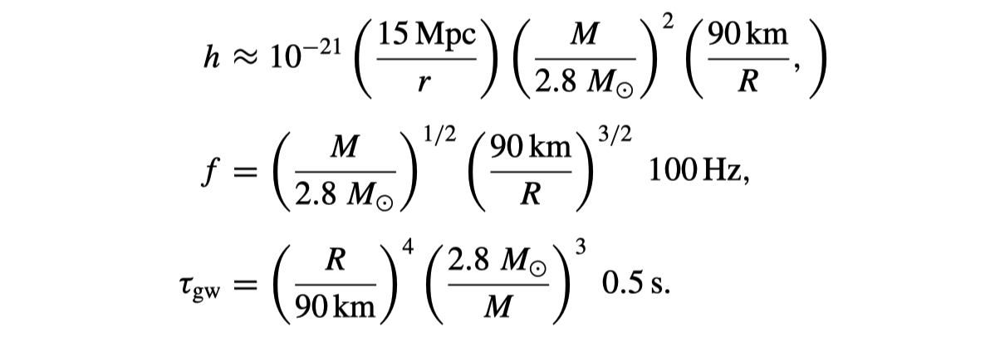

Astrophysics Cheat Sheet
Table of Contents
\( \newcommand{\dif}{\,\mathrm{d}} \newcommand{\sci}[2]{#1 \times 10^{#2}} \def\num#1{\numx#1}\def\numx#1e#2{{#1}\mathrm{e}{#2}} \newcommand{\msun}{{\rm M}_\odot} \newcommand{\si}[1]{{\rm #1}} \)
1 Fundamentals
Metallicity: \[Z = 0.0134, \; [{\rm Fe}/{\rm H}] \equiv \log_{10} \left[ \frac{(N_{\rm Fe}/N_{\rm H})_{\rm star}}{(N_{\rm Fe}/N_H)_{\odot}} \right]\]
2 ISM
Stromgren radius \[R_{S}\equiv\left(\frac{3Q_{0}}{4\pi\,n_{0}^{\;2}\,\alpha_{B}}\right)^{1/3} = 3.17 \, Q_{49}^{1/3} \, n_2^{-2/3} \, T_4^{0.28}~{\rm pc},\]
\[ \alpha_{B}(T_e) \approx 2 \times 10^{-13} \, T_{e,4}^{-3/4} \, {\rm cm}^3 \, {\rm s}^{-1}. \]
Ionization/recombination timescale \[\tau_{{\rm ioni.}}=\frac{4/3\,\pi R_{{\rm S}}^{\;3}\,n_{0}}{Q_{0}}=\frac{1}{\alpha_{B}\,n_{0}}=\frac{1.22\times10^{3}\,{\rm yr}}{n_{2}} \; (T \sim 10^4 \, {\rm K})\]
2.1 Dust
Sputter timescale \[\tau_{\rm sputter} = \frac{a}{|da/dt|} \approx 1e5 ~(1 + T_6^{-3}) \frac{a/0.1 \mu m}{n_H/{\rm cm}^{-3}} \;{\rm yr}\]
Radiation pressure cross section in the solar neighborhood is \(\left< \sigma_{\rm rad.pr.} \right>_{\rm ISRF} = \num{2.8e-22}~{\rm cm^2H^{-1}}\), whereas electron scattering is \(\sigma_{\rm T} = \num{6.65e-25}~{\rm cm^2}\).
3 Star Formation: Theories
3.1 Time Scales
Free-fall time: \[t_{\rm ff}=\sqrt{\frac{3\pi}{32G\rho_{0}}} \approx 43.5 \, {\rm Myr} \cdot n^{-1/2},\] assuming a mean particle weight \(\mu = 1.4\).
Isothermal sound speed (\(\mu\) is the mean particle weight; for ionized hydrogen, \(\mu = 0.5\)): \[ c_s = \sqrt{\frac{kT}{\mu m_{H}}} = 0.29\,\si{km/s} \; \left( \frac{T_1}{\mu} \right)^{1/2} = 9.1\,\si{km/s} \; \left( \frac{T_4}{\mu} \right)^{1/2} \]
Virial velocity: \[\begin{aligned} v_{\rm vir,orb} = \sqrt{\frac{GM}{R}} &= 6.6~\si{km.s^{-1}} \; M_4^{1/2} R_{\rm pc}^{-1/2} \\ &= 30~\si{km.s^{-1}} \; M^{1/2} R_{\rm AU}^{-1/2}\end{aligned}\]
3.2 Cooling
\[t_{\rm cool} = \frac{3}{2} \frac{kT}{n \Lambda} = 0.66~{\rm yr} \; \left( \frac{n}{{\rm cm}^{3}} \right)^{-1} \left( \frac{T}{{\rm K}} \right) \left( \frac{\Lambda}{10^{-23}~{\rm erg}~{\rm cm}^3~{\rm s}^{-1}} \right)^{-1}\]
Radiative cooling at \(T>10^6\) K is dominated by the bremsstrahlung volume cooling rate: \[{\cal E}_{\rm ff} = \int \varepsilon_{\rm ff}(\nu) \dif \nu \approx \num{1.4e-23} T_8^{1/2} \left( \frac{n_e}{{\rm cm}^{-3}} \right)^2 \si{erg.s^{-1}.cm^{-3}}\] assuming a charge number of unity (\(Z=1\)) and \(n_i \sim n_e\).
3.3 Stability and collapsing
\[Q=\;\alpha \cfrac{\Omega c_s}{\pi G \Sigma},~{\rm where } \, \alpha = 1 \, {\rm for Keplerian disk}, \sqrt{2} \, {\rm for flat disk}, 2 \, {\rm for rigid disk}\]
Jeans length and Jeans mass (\(n\) is particle number density and \(\mu\) is mean particle weight): 🔗
\begin{aligned} \lambda_{\rm J} &\equiv c_{\rm s} \sqrt{\frac{\pi}{G \bar\rho}} = 5.00\,{\rm pc} \; \mu^{-1} T_1^{1/2} n_2^{-1/2} \\ M_{\rm J} &= \frac{\pi^{5/2}}{6} \frac{c_{\rm s}^3}{(G^3 \bar\rho)^{1/2}} = 52.6~\msun \; \left( \frac{c_s}{0.2~\si{km.s^{-1}}} \right)^3 \left( \frac{\mu~n_2}{{\rm cm^{-3}}} \right)^{-1/2} = 160~\msun \, \mu^{-2} T_1^{3/2} n_2^{-1/2}, \end{aligned}Bonnor-Ebert mass
\[M_{\rm BE} = 1.182 \frac{c_s^3}{(G^3 \rho)^{1/2}} = 0.41 M_{\rm J}\]
4 Dynamics
Dynamical friction: \[\begin{aligned} \frac{\dif \mathbf{v}_M}{\dif t} &= D[\Delta v] \approx \frac{4 \sqrt{2\pi}}{3} G^2 M \rho \ln \Lambda \frac{ {\bf v}_M}{\sigma^3} \;\;\; (v_M \; \mathrm{small}), \\ \frac{\dif {\bf v}_M}{\dif t} &= D[\Delta v] \approx 4\pi G^2 M \rho \ln \Lambda \frac{{\bf v}_M}{v_M^3} \;\;\; (v_M \; \mathrm{large}),\end{aligned}\] where \[\Lambda = \frac{b_{\rm max}}{b_{90}} \approx \frac{\cal M}{M} \frac{R_{\rm orb}}{\cal R}.\]
5 Radiative Transfer
\[{\rm Compton:} \; \lambda_2 - \lambda_1 = \frac{h}{mc}(1 - \cos \theta)\]
6 Cosmology
6.1 Gravitational Wave
Back-of-the-envelope estimates of the amplitude of a gravitational wave: \[\begin{aligned} h &\approx \frac{G}{c^{4}} \frac{1}{r} \frac{\partial^{2}(MR^{2})}{\partial t^{2}}, \;\; f_{\rm dyn} \approx \sqrt{GM/R^3} \\ h &\approx \frac{G^2 M^2}{r R c^4} \approx \left( \frac{GM}{R c^{2}} \right) \left( \frac{GM}{r c^{2}} \right) \sim \frac{R_g}{R} \frac{R_g}{r}. \end{aligned} \] applied to a binary system consisting of two equal-mass neutron stars,
